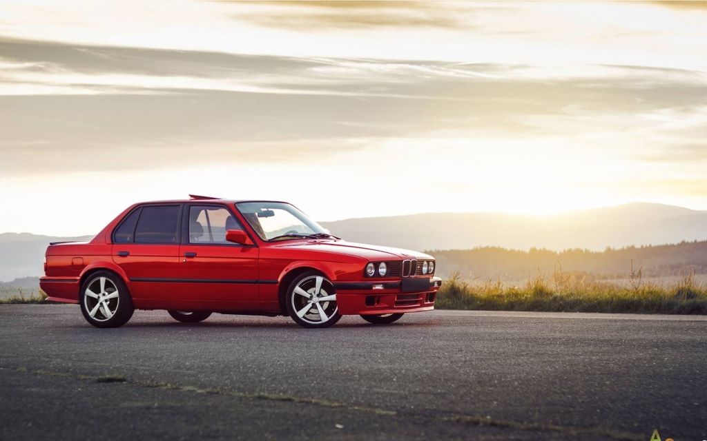

BMW 3 серии (E30), 1982–1994 2 поколение

Вторая «трешка» выпускалась с 1982 года. Выбор кузовов стал гораздо больше: купе, кабриолет, седан и универсал. Линейку моторов открывал 1,6-литровый мотор. Топ-версия BMW 325i оснащалась двигателем 2,5 л мощностью 170 л.с. Начиная с 1985 года на эту модель начали устанавливать дизельный мотор 2,4 л (атмосферный, а позднее и турбированный), в 1986 году появилась полноприводная версия 325ix. А 1986 год ознаменовался появлением заряженной версии BMW M3. Производство седанов третьей серии прекратилось в 1990 году, кабриолетов — в 1993 году, а универсалов — в 1994 году. Всего было выпущено 2,3 миллиона машин.